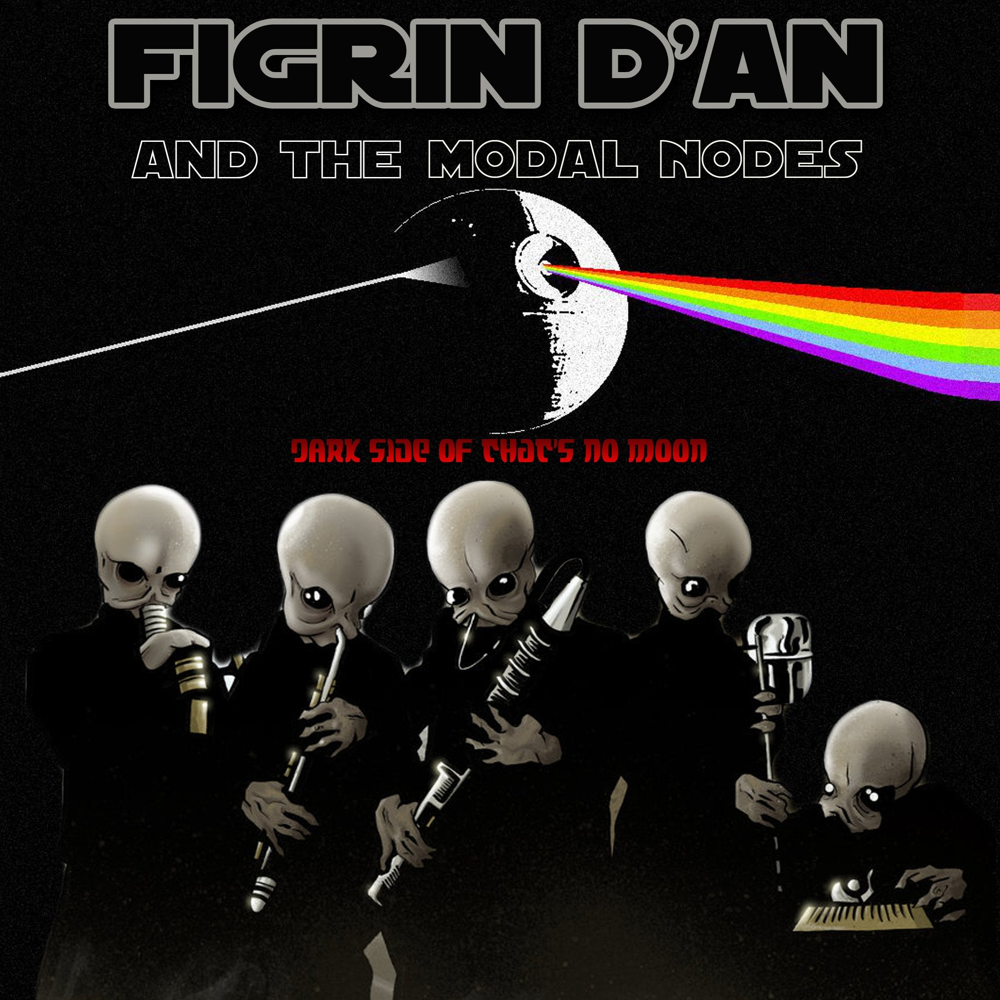

Figrin D’an and the Modal Nodes is famously known as the "Cantina Band" from the Star Wars universe

They have visited such famous locations as
- Bith
- Chalmun's Cantina
- Jabba's Palace
- Jabba's Townhome
- Nym's Nase
- Shanko's Hive
This band only speaks in Bith